Lo spread BTP–Bund dal minimo del 2026 a oggi
Da 60 a 120 punti base: che cosa determina il differenziale, quale dei due rendimenti si è mosso e perché lo shock energetico pesa adesso e non a marzo
Paolo Volterra ![]()
Italiano. Lo spread fra i rendimenti decennali italiani e tedeschi ha toccato il minimo del 2026 il 25 febbraio, a 59,8 punti base, ed è risalito a 122 punti base il 2 ottobre. Poiché lo spread è la differenza fra due rendimenti che si muovono entrambi, la nota scompone la variazione nel contributo del BTP e in quello del Bund e la colloca in una matrice a quattro casi. Dal minimo a oggi entrambi i rendimenti sono saliti, il BTP di 136 punti base e il Bund di 73: per sette mesi il movimento è stato in prevalenza comune, con un sovrappiù italiano contenuto. Nell’ultima settimana lo spread accelera: il BTP sale ancora e il rendimento del titolo tedesco di riferimento scende, ma le curve dei rendimenti a scadenza costante della BCE e della Bundesbank mostrano il rendimento tedesco a dieci anni sostanzialmente fermo; l’allargamento viene quindi soprattutto dal BTP, e la lettura come fuga verso la qualità resta un’ipotesi compatibile con i dati ma non confermata. Lo shock energetico è presente da marzo, ma allora aveva prodotto un episodio di avversione al rischio rientrato in poche settimane. A fine settembre agisce su un terreno diverso: inflazione salita per sei mesi, due rialzi dei tassi della Banca centrale europea, Treasury statunitensi ai massimi da oltre vent’anni e, come ipotesi coerente con i dati ma basata su eventi riportati dalle agenzie, il passaggio dello shock ai bilanci pubblici, con la manovra francese e le decisioni di bilancio italiane concentrate negli stessi giorni. Un approfondimento sulla Francia mostra che il rendimento francese, sempre inferiore a quello italiano dal 2007, lo supera per la prima volta nel settembre 2025: la Francia ha meno debito dell’Italia ma un disavanzo primario, l’Italia più debito ma un avanzo primario. Il confronto internazionale conferma che nell’ultima settimana tutti gli spread verso il Bund si allargano, ma Italia e Francia il doppio della Spagna; per i titoli in altra valuta, Gilt e Treasury, lo spread va letto al netto del costo di copertura dal cambio. Una stima su un panel di nove Paesi dell’area dell’euro dal 2003 al 2026 indica che lo spread si associa soprattutto al saldo di bilancio (circa 15 punti base per punto di prodotto) e alla crescita, e che il debito pesa molto solo nelle crisi. Con i fondamentali pubblicati a ottobre il valore previsto dal modello per lo spread italiano è di circa 105 punti base, vicino al livello osservato; con le informazioni disponibili a febbraio era di circa 120, il doppio dello spread di allora. L’incertezza della previsione del modello trimestrale è però ampia: il confronto è compatibile con un riavvicinamento ai valori previsti dal modello, ma non dimostra che il minimo di febbraio fosse un prezzo anomalo né che l’allargamento sia una correzione verso un valore di equilibrio. Dati aggiornati al 2 ottobre 2026; l’inflazione di settembre è una stima rapida, soggetta a revisione.
English. The spread between Italian and German ten-year yields reached its 2026 low on 25 February, at 59.8 basis points, and rose back to 122 basis points on 2 October. Since the spread is the difference between two yields that both move, the note splits the change into the contribution of the BTP and that of the Bund and places it in a four-case matrix. From the low to today both yields rose, the BTP by 136 basis points and the Bund by 73: for seven months the move was mostly common, with a limited Italian excess. In the last week the spread accelerates: the BTP keeps rising and the German benchmark yield falls, but the constant-maturity yield curves of the ECB and the Bundesbank show the German ten-year yield broadly unchanged; the widening therefore comes mainly from the BTP, and a flight-to-quality reading remains a hypothesis consistent with the data but not confirmed. The energy shock has been present since March, but at that time it produced a risk-off episode that faded within weeks. At the end of September it acts on different ground: six months of rising inflation, two rate hikes by the European Central Bank, US Treasury yields at their highest in over twenty years and, as a hypothesis consistent with the data but based on events reported by news agencies, the transmission of the shock to public budgets, with the French budget and Italian fiscal decisions concentrated in the same days. A focus on France shows that the French yield, always below the Italian one since 2007, exceeds it for the first time in September 2025: France has less debt than Italy but a primary deficit, Italy more debt but a primary surplus. The international comparison confirms that in the last week all spreads against the Bund widen, but Italy and France twice as much as Spain; for bonds in another currency, Gilts and Treasuries, the spread must be read net of the cost of hedging the exchange rate. A panel estimate for nine euro area countries from 2003 to 2026 shows that spreads are associated mainly with the budget balance (about 15 basis points per point of GDP) and with growth, while debt matters strongly only in crises. With the fundamentals published by October the model-predicted Italian spread is about 105 basis points, close to the observed level; with the information available in February it was about 120, twice the spread at that time. The uncertainty of the quarterly model’s prediction is, however, large: the comparison is consistent with the spread moving back towards the model’s predicted values, but it does not show that the February low was a mispriced level, nor that the widening is a correction towards an equilibrium value. Data updated to 2 October 2026; September inflation is a flash estimate, subject to revision.
spread BTP-Bund, rendimenti sovrani, BTP, Bund, OAT, BCE, inflazione, energia, fuga verso la qualità, contagio
1 La domanda
Il 25 febbraio 2026 lo spread fra il rendimento del BTP decennale e quello del Bund tedesco di pari durata ha toccato il minimo dell’anno, 59,8 punti base. Il 2 ottobre ha chiuso a 122 punti base: il doppio [1], [2]. La nota risponde a tre domande. Che cosa determina, in teoria, il differenziale fra due emittenti sovrani che usano la stessa moneta. Quale dei due rendimenti si è mosso, e in quale direzione, fra il minimo e oggi. Perché uno shock energetico in corso da marzo produca l’accelerazione proprio a fine settembre.
L’analisi è condotta sulle variabili macroeconomiche e di mercato. Le spiegazioni riportate dalla stampa e dalle agenzie sono raccolte a parte, nell’ultima sezione, e trattate come interpretazioni e non come dati.
2 Che cosa determina lo spread
2.1 La teoria in breve
La letteratura empirica sugli spread sovrani dell’area dell’euro converge su tre famiglie di determinanti. La prima è il rischio di credito, legato alla sostenibilità del debito: livello del debito in rapporto al prodotto, deficit, crescita, costo medio dell’indebitamento [3], [4]. La seconda è il premio di liquidità: il mercato del Bund è più profondo e, nelle fasi di tensione, la liquidità si ritira prima dai titoli meno scambiati [5], [6]. La terza è l’avversione al rischio internazionale, che sposta gli investitori verso i titoli rifugio indipendentemente dai fondamentali del singolo Paese [5], [7].
Tre risultati aggiungono profondità al quadro. Primo, il peso dei fondamentali non è costante: il mercato può ignorarli a lungo e poi prezzarli tutti insieme, quando un evento li rende di nuovo visibili. È il meccanismo del wake-up call documentato per la crisi del debito sovrano [8], [9]. Secondo, in un’unione monetaria un Paese emette in una moneta che non controlla e può essere esposto a crisi di liquidità che si autoalimentano: lo spread sale perché gli investitori temono che salga, oltre la misura giustificata dal debito [10], [11]. Terzo, la presenza e la credibilità della banca centrale come acquirente di ultima istanza riducono questa componente [12]. Per l’area dell’euro nel suo insieme, il rapporto fra debito e prodotto spiega quasi il 40 per cento dell’andamento degli spread fra il 2000 e il 2023, ma nei picchi di crisi i fattori macroeconomici ne spiegano circa un quarto [13].
Sul lato del Bund, la scarsità di titoli sicuri ne ha a lungo compresso il rendimento con un «premio di convenienza»; l’aumento dell’offerta di debito pubblico e la riduzione dei bilanci delle banche centrali lo stanno erodendo [14]. Il Bund non è dunque un riferimento immobile: anch’esso si muove, e con ragioni proprie.
2.2 Lo spread è una differenza: la matrice dei quattro casi
Lo spread è la differenza fra due rendimenti: \(\text{spread} = r_{BTP} - r_{Bund}\), e quindi \(\Delta\text{spread} = \Delta r_{BTP} - \Delta r_{Bund}\). Un allargamento può nascere dal BTP che sale, dal Bund che scende, o da entrambi che salgono in misura diversa. La figura seguente riassume i quattro casi.
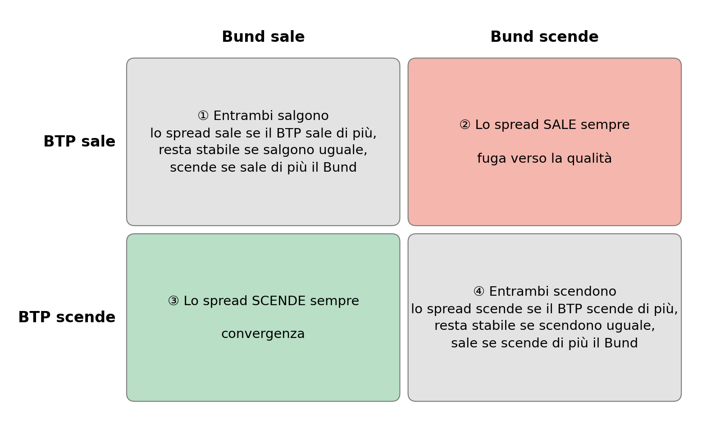
In parole semplici: lo spread è come la distanza fra due ascensori. Se uno sale e l’altro scende la distanza cresce di sicuro (casella ②); se uno scende e l’altro sale si accorcia di sicuro (casella ③); se salgono o scendono insieme, conta quale va più veloce.
Le due caselle con il segno certo hanno anche una lettura economica. La casella ② è compatibile con una fuga verso la qualità: gli investitori vendono i titoli considerati più rischiosi e comprano quelli considerati sicuri [15]. La casella ③ è la convergenza: si riduce il premio richiesto al Paese più rischioso mentre il rifugio perde attrattiva. Le caselle ① e ④ descrivono invece un movimento comune dei tassi, guidato dalla politica monetaria o dai mercati globali, in cui lo spread cambia solo per la diversa sensibilità dei due titoli.
2.3 La catena causa-effetto
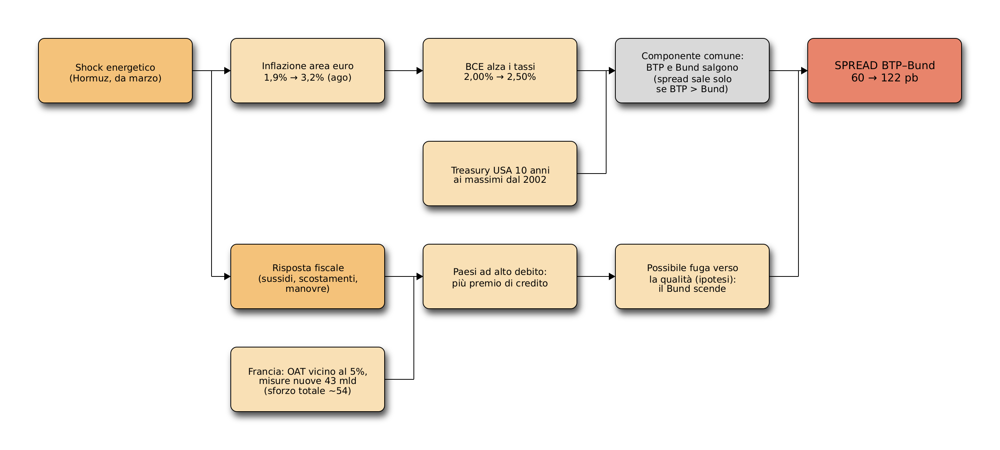
In parole semplici: l’energia cara spinge in alto i prezzi, la BCE alza i tassi e tutti i titoli di Stato rendono di più. Questo da solo non allarga molto lo spread. Secondo l’ipotesi della nota, lo allarga quando i governi devono spendere per difendersi dal caro-energia e i mercati si chiedono chi, fra i Paesi con più debito, potrà permetterselo.
3 Dal minimo a oggi
3.1 Il confronto fra i due momenti
| Indicatore | Minimo (25/2/2026) | Oggi (2/10/2026) | Δ |
|---|---|---|---|
| Spread BTP–Bund (pb) | 60 | 122 | +62 |
| Rendimento BTP 10 anni (%; Δ in pb) | 3,31 | 4,66 | +136 |
| Rendimento Bund 10 anni (%; Δ in pb) | 2,71 | 3,44 | +73 |
| Rendimento Bund 2 anni (%; Δ in pb) | 2,04 | 2,99 | +95 |
| Spread OAT–Bund (pb) | 55 | 145 | +91 |
| Spread Bonos–Bund (pb) | 41 | 64 | +23 |
| Treasury USA 10 anni (%; Δ in pb) | 4,05 | 5,29 | +124 |
| Tasso BCE sui depositi (%) | 2,00 | 2,50 | +0,50 |
| Brent ($/barile) | 71 | 100 | +29 |
| Gas TTF (€/MWh) | 31 | 74 | +43 |
| MOVE (volatilità obbligazionaria) | 62 | 108 | +46 |
| VIX (volatilità azionaria) | 17,9 | 16,0 | -2,0 |
| EUR/USD | 1,18 | 1,13 | -0,05 |
| Inflazione IPCA area euro (feb → ago, %) | 1,9 | 3,2 | +1,4 |
| Inflazione IPCA Italia (feb → ago, %) | 1,5 | 3,2 | +1,7 |
| Inflazione IPCA Germania (feb → ago, %) | 2,0 | 2,9 | +0,9 |
In parole semplici: da febbraio a oggi è salito quasi tutto: l’energia, l’inflazione, i tassi della BCE, i rendimenti americani e tedeschi. L’Italia paga ora 1,36 punti percentuali in più sul decennale, la Germania 0,73: la differenza fra i due aumenti è l’allargamento dello spread. La Francia ha fatto peggio dell’Italia, la Spagna molto meglio. L’unico indicatore che non è salito è la paura sulle borse (VIX).
3.2 Quale rendimento si è mosso
| Fase | Δ BTP (pb) | Δ Bund (pb) | Δ spread (pb) | Cella della matrice |
|---|---|---|---|---|
| minimo (25/2) → media lug–ago | +64 | +44 | +20 | ① entrambi salgono, BTP di più |
| media lug–ago → 25/9 | +55 | +48 | +7 | ① entrambi salgono, BTP di più |
| 25/9 → 2/10 | +17 | -18 | +34 | ② BTP sale, Bund scende |
| minimo (25/2) → 2/10 (totale) | +136 | +73 | +62 | ① entrambi salgono, BTP di più |
In parole semplici: per sette mesi BTP e Bund sono saliti quasi insieme, con l’Italia un po’ più veloce: lo spread si è allargato di poco. Nell’ultima settimana, misurati sui titoli di riferimento, i due ascensori hanno preso direzioni opposte, il BTP su e il Bund giù, e in cinque giorni lo spread ha guadagnato più di quanto avesse fatto nei sette mesi precedenti. Le differenze di questa tavola sono calcolate sui rendimenti non arrotondati e possono non coincidere con la differenza dei valori arrotondati.
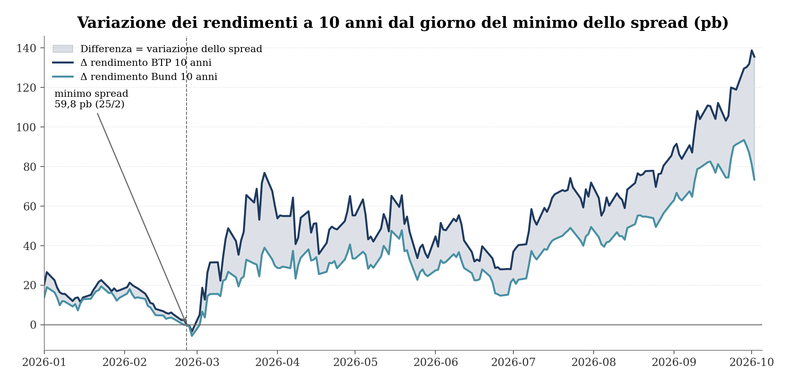
In parole semplici: le due linee salgono quasi parallele da marzo a settembre; a fine settembre la linea del Bund piega verso il basso mentre quella del BTP continua a salire, e l’area grigia fra le due si allarga di colpo.
La scomposizione distingue due episodi diversi. Il primo, da marzo a settembre, cade nella casella ①: un rialzo generalizzato dei tassi, con un sovrappiù italiano modesto (20 punti base fino all’estate, altri 7 fino al 25 settembre). Il secondo, nella settimana dal 28 settembre al 2 ottobre, cade sui titoli di riferimento nella casella ②: il BTP sale di 17 punti base mentre il Bund ne perde 18, e la settimana spiega più della metà dell’intero allargamento dal minimo. La configurazione è compatibile con una fuga verso la qualità, ma la scomposizione contabile da sola non la identifica, e la parte relativa al Bund non è confermata dalle misure a scadenza costante (paragrafo seguente). Lo stesso schema, con intensità maggiore, colpisce la Francia: lo spread OAT–Bund passa da 55 a 145 punti base, mentre quello spagnolo si ferma a 64 (Tabella 1).
Un’avvertenza riguarda la misura del Bund nell’ultima settimana. Il titolo decennale di riferimento è un singolo titolo; le curve dei rendimenti stimate dalla BCE sui titoli di Stato con rating AAA dell’area dell’euro e dalla Bundesbank sui titoli tedeschi misurano invece il rendimento a una scadenza costante di dieci anni. Fra il 25 settembre e il 1° ottobre, ultimo giorno disponibile per tutte le fonti, il rendimento del titolo di riferimento scende di 10 punti base, quello della curva della BCE di 2 e quella della Bundesbank sale di 3 [19], [20]. Misurato sulle curve, lo spread italiano si allarga comunque, di 17–22 punti base contro i 30 del titolo di riferimento, ma quasi solo per il rialzo del BTP. Sul periodo precedente, dal minimo al 25 settembre, le tre misure danno risultati vicini. I livelli riportati dalle agenzie confermano il calo del titolo di riferimento fino al 2 ottobre [2], ma non dicono se si tratti di un movimento del rendimento tedesco in generale o di quel titolo in particolare. La verifica riguarda il solo riferimento tedesco: il BTP resta misurato sul titolo di riferimento, perché non è disponibile una curva ufficiale giornaliera dei rendimenti italiani a scadenza costante. Non è quindi una scomposizione completa su scadenze costanti per entrambi gli emittenti.
| Riferimento | Δ rif. 25/2 → 25/9 | Δ spread 25/2 → 25/9 | Δ rif. 25/9 → 1/10 | Δ spread 25/9 → 1/10 |
|---|---|---|---|---|
| Bund benchmark | 91 | 28 | -10 | 30 |
| Curva AAA area euro (BCE) | 84 | 35 | -2 | 22 |
| Curva Bundesbank | 84 | 35 | 3 | 17 |
| BTP benchmark | 119 | 20 |
In parole semplici: se si misura il rendimento tedesco con le curve ufficiali invece che con un solo titolo, nell’ultima settimana la Germania resta quasi ferma. Lo spread italiano si allarga lo stesso, ma soprattutto perché sale il BTP, non perché scende il Bund.
| Giorno | Bund 10a riferimento (%) | Bund 10a Bundesbank (%) | Differenza (pb) |
|---|---|---|---|
| 25/2/2026 | 2,71 | 2,79 | -8 |
| 25/9/2026 | 3,62 | 3,63 | -1 |
| 28/9/2026 | 3,64 | 3,69 | -5 |
| 29/9/2026 | 3,61 | 3,68 | -7 |
| 30/9/2026 | 3,58 | 3,64 | -6 |
| 1/10/2026 | 3,52 | 3,66 | -14 |
| 2/10/2026 | 3,44 | n.d. | n.d. |
In parole semplici: due termometri diversi misurano la temperatura del Bund. Di solito differiscono di pochi punti, il 1° ottobre di 14: il calo degli ultimi giorni compare sul titolo di riferimento ma non sulla curva a scadenza costante, quindi non è certo che il rendimento tedesco in generale sia sceso.
4 Perché ora, se lo shock energetico c’è da marzo
Il prezzo del petrolio è salito sopra i 100 dollari al barile già a marzo, con il primo episodio di tensione nello Stretto di Hormuz, e vi è rimasto ad aprile e maggio. Lo spread era salito fino a 98 punti base a fine marzo, ma era rientrato intorno a 77 punti base nella media di aprile e maggio, con il Brent ancora sopra i 100 dollari. Lo stesso prezzo del petrolio, a sei mesi di distanza, produce dunque effetti diversi. Il confronto fra i due episodi mostra che cosa è cambiato.
| Indicatore | Marzo 2026 (primo shock) | 28/9–2/10/2026 | Δ |
|---|---|---|---|
| Brent ($/barile, media) | 100 | 103 | +3 |
| Gas TTF (€/MWh, media) | 53 | 72 | +20 |
| Inflazione IPCA area euro (%, mar vs ago) | 2,5 | 3,2 | +0,7 |
| Tasso BCE sui depositi (%) | 2,00 | 2,50 | +0,50 |
| Treasury USA 10 anni (%, media) | 4,25 | 5,26 | +1,02 |
| VIX — volatilità azionaria (media) | 25,6 | 16,2 | -9,4 |
| MOVE — volatilità obbligazionaria (media) | 89 | 107 | +17 |
| Spread OAT–Bund (pb, massimo / ultimo) | 75 | 145 | +71 |
| Spread BTP–Bund (pb, massimo / ultimo) | 98 | 122 | +24 |
In parole semplici: il petrolio costa quanto a marzo. A marzo però c’era paura sulle borse (VIX a 26) e la paura passa in fretta. Oggi le borse sono calme ma sono cambiati i tassi: inflazione più alta, BCE che ha già alzato due volte, rendimenti americani di un punto più alti. Lo shock non è più un momento di panico: è diventato un costo del debito più alto e duraturo.
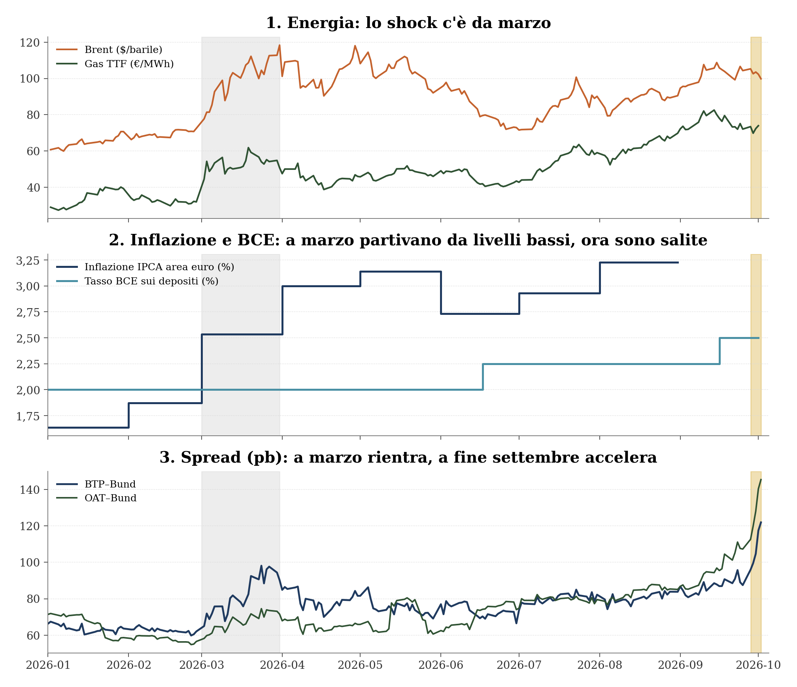
In parole semplici: il primo pannello dice che l’energia è cara da marzo; il secondo che nel frattempo l’inflazione è salita e la BCE ha cominciato ad alzare i tassi; il terzo che lo spread, rientrato dopo marzo, riparte solo quando i primi due fattori si sono accumulati.
Dai dati emergono cinque differenze fra marzo e oggi.
La natura dello shock. A marzo l’episodio era di avversione al rischio generalizzata: VIX medio a 25,6, MOVE a 89. Lo spread si era allargato per la rotazione verso i titoli rifugio ed era rientrato quando la paura si era attenuata. Oggi il VIX è a 16 e il MOVE a 107: il confronto fra i due momenti è compatibile con una tensione concentrata soprattutto sul reddito fisso e con un riprezzamento del costo del debito più che con un episodio di panico, senza escludere tensioni intermedie che le due date non colgono.
L’accumulo sull’inflazione. A marzo l’inflazione dell’area partiva dall’1,9 per cento di febbraio; sei mesi di energia cara l’hanno portata al 3,2 per cento in agosto, e la stima rapida di settembre la colloca al 3,8 per cento [21]. Per l’Italia la stima rapida porta l’indice armonizzato dal 3,2 al 4,1 per cento [21]; un ufficio studi bancario la confronta con attese di consenso del 3,7–3,8 per cento e riporta la componente energetica del NIC dal 17,1 al 22,3 per cento; il dato è diffuso il 30 settembre, a metà della settimana di accelerazione [22]. Il gas, più legato dell’olio all’economia europea, costa oggi circa 20 euro per megawattora in più che a marzo; i rincari del gas hanno effetti più diffusi e persistenti di quelli del petrolio [22].
La reazione della politica monetaria. A marzo la Banca centrale europea non aveva toccato i tassi. Li ha alzati il 17 giugno e il 16 settembre, portando il tasso sui depositi dal 2,00 al 2,50 per cento [17]. Un costo del denaro più alto aumenta l’onere di un debito elevato e rende più sensibile il premio di credito: è il canale dei fondamentali di [3] e [4].
Il contesto globale. Il rendimento del Treasury decennale è passato da una media del 4,25 per cento a marzo al 5,26 per cento della settimana di accelerazione, un livello che non toccava dal maggio 2002 [18]. Il rialzo dei tassi globali alza la componente comune di tutti i rendimenti europei.
Il passaggio ai bilanci pubblici. È il candidato più plausibile a spiegare la data; i fatti sono in gran parte verificati, il nesso causale resta un’ipotesi. Il 29 settembre il Tesoro colloca BTP a 10 anni al 4,58 per cento e a 5 anni al 4,08 per cento, con rapporti di copertura di 1,56 e 1,54 [23]; sul mercato secondario il decennale italiano non toccava quei livelli dal novembre 2023 [1]. Il 1° ottobre il governo francese presenta il progetto di legge di bilancio 2027, con un obiettivo di deficit del 5 per cento del prodotto e, secondo i resoconti concordi della stampa, 43 miliardi di misure nuove, che con il trascinamento delle misure del 2026 portano lo sforzo complessivo a circa 54 miliardi [24], [25]. In Italia, il 2 ottobre, un ministro annuncia che il Consiglio dei ministri deciderà uno scostamento di bilancio di circa 7 miliardi: la delibera non è ancora pubblicata [2]. Se il nesso regge, lo shock energetico smette di essere solo un problema di prezzi e diventa un problema di conti pubblici, cioè la variabile che distingue l’Italia dalla Germania. Il dato che lo rende plausibile è verificato: nella stessa settimana lo spread si allarga di 34 punti base per l’Italia e di 38 per la Francia, contro 18 per la Spagna (Tabella 7).
Se il nesso del punto 5 regge, la teoria offre una chiave per tenere insieme i cinque elementi. Le condizioni di fondo — debito elevato, energia cara, tassi in salita — erano note da mesi; ciò che cambia a fine settembre è la loro visibilità simultanea, quando la manovra francese e le decisioni di bilancio italiane le trasformano in numeri. È il meccanismo del wake-up call [8]: il mercato riprezza in pochi giorni fondamentali che conosceva già. Una volta avviato, il movimento può autoalimentarsi, come documentato per le crisi di liquidità dei debiti sovrani nell’unione monetaria [10], [26].
4.1 L’inflazione nei singoli Paesi
| Paese | 2/2026 | 5/2026 | 7/2026 | 8/2026 | 9/2026 (flash) | Δ feb → ago | Δ feb → set |
|---|---|---|---|---|---|---|---|
| Italia | 1,5 | 3,2 | 2,9 | 3,2 | 4,1 | +1,7 | +2,6 |
| Francia | 1,1 | 2,8 | 2,4 | 2,6 | 3,4 | +1,6 | +2,3 |
| Spagna | 2,5 | 3,6 | 3,9 | 4,6 | 5,0 | +2,1 | +2,5 |
| Germania | 2,0 | 2,7 | 2,8 | 2,9 | 3,3 | +0,9 | +1,3 |
| Area euro | 1,9 | 3,1 | 2,9 | 3,2 | 3,8 | +1,4 | +1,9 |
| Stati Uniti (CPI) | 2,7 | 4,3 | 3,5 | 3,7 | n.d. | +1,0 | n.d. |
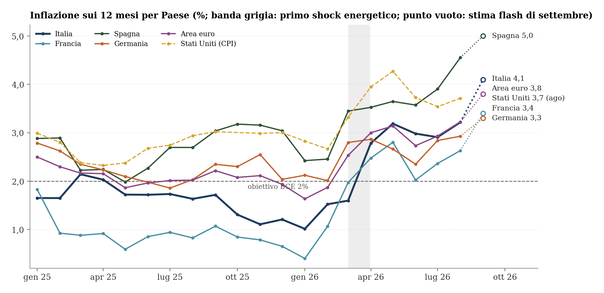
In parole semplici: da marzo i prezzi salgono ovunque, ma non allo stesso modo. Il Paese con l’inflazione più alta è la Spagna, che però è anche quello con lo spread più basso; la Francia ha, con la Germania, l’inflazione più bassa, ma lo spread più alto. A settembre l’Italia fa il salto più ampio in un solo mese, da 3,2 a 4,1 per cento. Non è quindi l’inflazione del singolo Paese a decidere lo spread.
Il confronto toglie forza a una lettura diretta «più inflazione, più spread». Fra febbraio e settembre, secondo la stima rapida, l’inflazione sale di 2,6 punti in Italia, 2,5 in Spagna, 2,3 in Francia e 1,3 in Germania [21]; l’ordinamento degli spread è un altro: la Spagna, con un aumento simile a quello italiano, ha lo spread più basso, la Francia, con un aumento minore, il più alto. L’inflazione agisce soprattutto attraverso il canale comune — la politica monetaria e il livello dei tassi — e, per i Paesi ad alto debito, attraverso il costo del servizio del debito. Un’inflazione più alta aiuta anzi i conti pubblici quando fa crescere il prodotto nominale più del costo medio del debito, come avviene in Spagna [28].
5 Il confronto internazionale
5.1 Titoli in euro e titoli in altra valuta
Lo spread verso il Bund ha un significato diverso a seconda della valuta del titolo. Per i titoli di Spagna, Italia e Francia, emessi in euro come il Bund, la differenza di rendimento misura in prevalenza il rischio dell’emittente e la liquidità del suo mercato: chi compra un BTP invece di un Bund non cambia moneta. Per il Gilt britannico e il Treasury statunitense non è così. Il loro rendimento è espresso in sterline e in dollari e incorpora le attese sui tassi della Bank of England e della Federal Reserve, l’inflazione attesa in quei Paesi e il rischio di cambio; il rischio di insolvenza vi pesa poco. Uno spread Treasury–Bund di 179 punti base non dice che gli Stati Uniti siano più rischiosi dell’Italia: dice che negli Stati Uniti i tassi sono più alti.
Per rendere confrontabili i rendimenti in valuta diversa si può guardare a quanto renderebbero a un investitore in euro che si copre dal rischio di cambio. Il costo della copertura, per una copertura rinnovata a breve scadenza, è approssimativamente pari alla differenza fra i tassi a breve delle due valute; in condizioni di tensione se ne discosta per la cosiddetta base, la deviazione dalla parità coperta dei tassi d’interesse [29]. In questa nota il costo è approssimato con la differenza fra i tassi overnight SOFR (dollaro), SONIA (sterlina) ed €STR (euro) [30]; lo spread «coperto dal cambio» è lo spread verso il Bund al netto di questo costo. È una misura indicativa, che trascura la base e la differenza fra tassi overnight e tassi a termine.
5.2 Cinque momenti a confronto
| Spread verso il Bund (pb) | Minimo 25/2 | Picco 24/3 | Media lug–ago | 25/9 | 2/10 |
|---|---|---|---|---|---|
| Bonos–Bund | 41 | 55 | 46 | 46 | 64 |
| BTP–Bund | 60 | 98 | 80 | 88 | 122 |
| OAT–Bund | 55 | 75 | 81 | 107 | 145 |
| Gilt–Bund | 161 | 197 | 183 | 174 | 189 |
| Treasury–Bund | 134 | 135 | 149 | 154 | 179 |
| Costo copertura sterlina (SONIA − €STR) | 179 | 180 | 155 | 129 | 129 |
| Costo copertura dollaro (SOFR − €STR) | 174 | 170 | 145 | 146 | 146 |
| Gilt–Bund coperto dal cambio | -18 | 17 | 29 | 45 | 60 |
| Treasury–Bund coperto dal cambio | -40 | -34 | 4 | 8 | 33 |
In parole semplici: in euro, la Spagna paga poco più della Germania, l’Italia di più e la Francia, che a febbraio pagava meno dell’Italia, oggi paga più di tutti. Inglesi e americani pagano molto di più della Germania, ma per una ragione diversa: i loro tassi ufficiali sono più alti. Se si toglie il costo di proteggersi dal cambio, a febbraio un Treasury rendeva a un investitore europeo meno di un Bund; oggi rende di più.
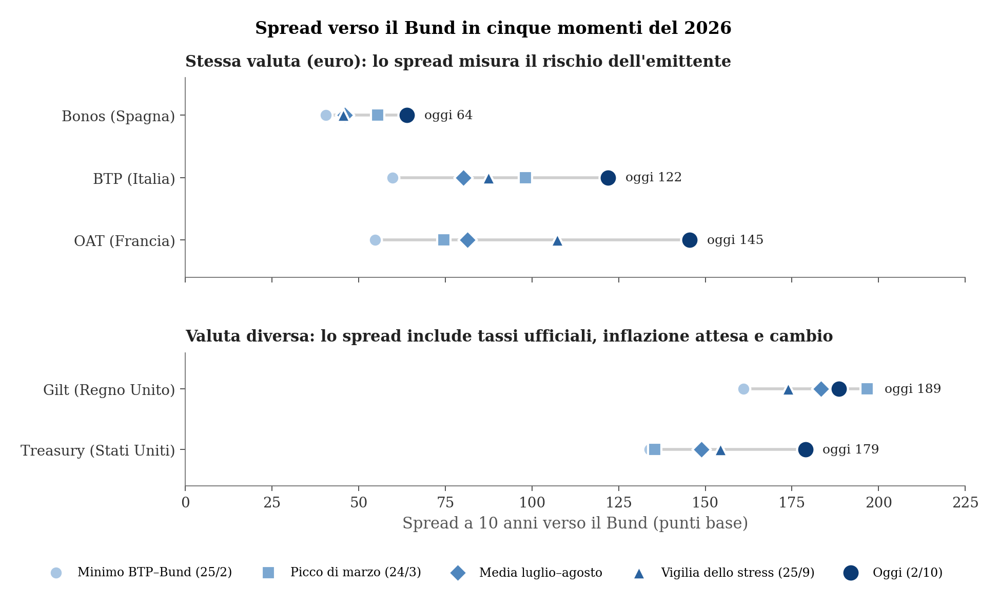
In parole semplici: ogni riga è un Paese, ogni punto un momento dell’anno; più la riga è lunga, più lo spread si è mosso. La riga più lunga è quella francese, poi quella italiana; la Spagna si muove poco. In tutte le righe il punto più scuro (oggi) è a destra o quasi: nell’ultima settimana tutti gli spread verso il Bund si sono allargati.
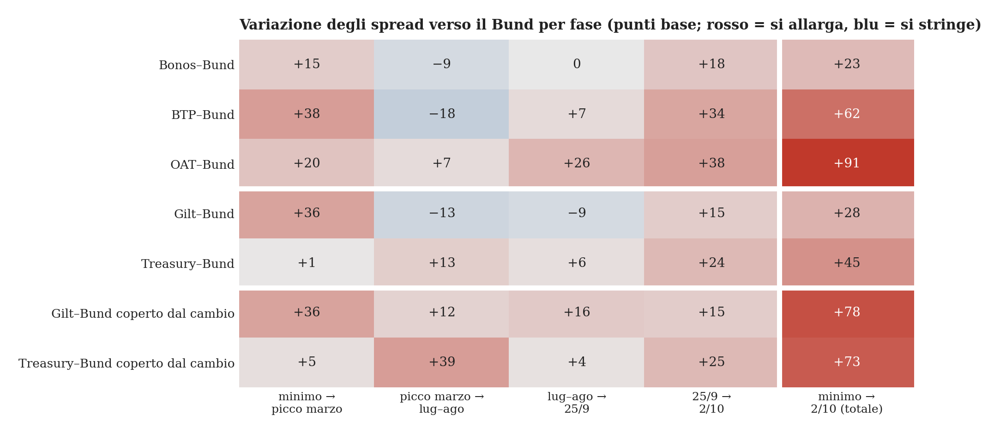
In parole semplici: la colonna «25/9 → 2/10» è rossa in tutte le righe: nell’ultima settimana il Bund ha reso meno di tutti gli altri titoli. Ma l’intensità cambia: la Spagna si allarga di 18 punti, quanto basta a riflettere il calo del Bund; Italia e Francia di 34 e 38, il doppio.
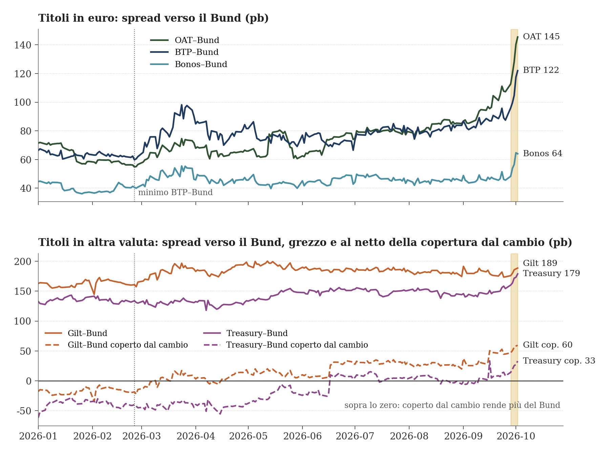
In parole semplici: in alto, Italia e Francia si muovono quasi appaiate in luglio e agosto, poi la Francia si stacca e l’Italia la segue; la Spagna resta in basso e sale solo negli ultimi giorni. In basso, inglesi e americani pagano sempre molto più della Germania; ma se si toglie il costo di proteggersi dal cambio (linee tratteggiate), a inizio anno rendevano meno del Bund e oggi rendono di più. I gradini delle linee tratteggiate arrivano nei giorni in cui la BCE ha alzato i tassi.
Tre risultati emergono dal confronto.
Il primo riguarda la settimana di accelerazione. Fra il 25 settembre e il 2 ottobre lo spread verso il Bund si allarga per tutti i titoli: di 15 punti base per il Gilt, 18 per il Bonos, 24 per il Treasury, 34 per il BTP, 38 per l’OAT. Poiché nello stesso periodo il rendimento del titolo tedesco di riferimento scende di 18 punti base (Tabella 2), una parte comune dell’allargamento è legata a quel titolo, compatibile con una domanda di Bund come rifugio ma non confermata dalle curve a scadenza costante (Tabella 3). La Spagna si allarga quasi esattamente di quella misura; Italia e Francia di circa il doppio. Il sovrappiù, circa 16 punti per l’Italia e 20 per la Francia, è la parte non condivisa con la Spagna: riguarda i due grandi emittenti ad alto debito, ma da solo non ne identifica la causa.
Il secondo riguarda la Francia. Al minimo di febbraio l’OAT pagava sul Bund meno del BTP (55 contro 60 punti base); in luglio–agosto i due spread erano allineati intorno a 80; dall’inizio di settembre la Francia paga stabilmente più dell’Italia, con una distanza che sale da zero a circa 20 punti base il 25 settembre e a 23 il 2 ottobre. Nella settimana di accelerazione la distanza fra i due resta quasi invariata: l’Italia segue la Francia di pari passo. Sull’intero periodo lo spread francese si allarga di 91 punti base, quello italiano di 62.
Il terzo riguarda i titoli in altra valuta. Senza copertura, lo spread Treasury–Bund passa da 134 a 179 punti base e quello Gilt–Bund da 161 a 189: il rialzo globale dei tassi tocca Stati Uniti e Regno Unito più della Germania. Al netto della copertura dal cambio il movimento è più ampio: il Treasury coperto passa da 40 punti base sotto il Bund a 33 sopra, il Gilt coperto da 18 sotto a 60 sopra. La ragione è in parte meccanica: i due rialzi della Banca centrale europea hanno alzato l’€STR e ridotto il costo di copertura del dollaro e della sterlina per un investitore in euro, di 28 e 50 punti base rispettivamente. Per chi investe in euro, quindi, con i costi di copertura attuali Treasury e Gilt coperti sono un’alternativa al Bund più attraente che a febbraio, nello stesso momento in cui i titoli dei Paesi europei ad alto debito devono offrire un premio maggiore. Non si tratta di un rendimento garantito sull’intera durata del titolo: la copertura va rinnovata a ogni scadenza e il suo costo cambia con i tassi a breve dei due Paesi.
6 Il caso Francia
6.1 Un sorpasso senza precedenti
Nella serie giornaliera disponibile, che parte dall’aprile 2007, il rendimento decennale francese è rimasto sempre sotto quello italiano fino al settembre 2025. Nella crisi del debito sovrano del 2012 la distanza media era di quasi 300 punti base. Il primo giorno in cui l’OAT ha reso più del BTP è il 17 settembre 2025; nel resto del 2025 è accaduto nel 20 per cento dei giorni di borsa, nel 2026 nel 45 per cento, e il 2 ottobre la Francia paga 23 punti base più dell’Italia [1].
| Anno | OAT–Bund (pb, media) | BTP–Bund (pb, media) | OAT–BTP (pb, media) | Giorni con OAT sopra BTP (%) |
|---|---|---|---|---|
| 2008 | 23 | 65 | -42 | 0 |
| 2012 | 97 | 392 | -295 | 0 |
| 2018 | 32 | 214 | -182 | 0 |
| 2022 | 52 | 195 | -144 | 0 |
| 2024 | 64 | 136 | -73 | 0 |
| 2025 | 74 | 94 | -21 | 20 |
| 2026 (fino al 2/10) | 74 | 77 | -3 | 45 |
In parole semplici: per diciotto anni il mercato ha chiesto all’Italia più che alla Francia, a volte molto di più. Dall’autunno 2025 non è più così: oggi i due Paesi pagano più o meno lo stesso, e in molti giorni la Francia paga di più.
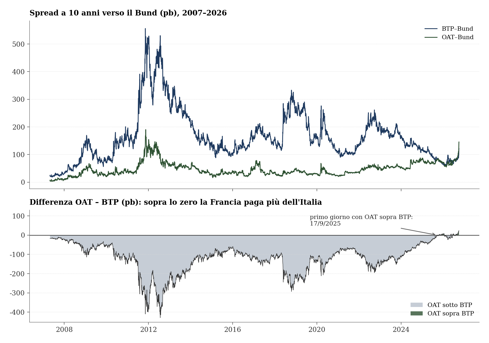
In parole semplici: le due linee in alto si avvicinano da due direzioni: quella italiana scende dal 2022, quella francese sale. In basso l’area grigia si assottiglia fino a sparire: dal 2025 la linea passa sopra lo zero.
La convergenza viene da entrambi i lati. Lo spread italiano verso il Bund scende da una media di 195 punti base nel 2022 a 77 nel 2026; quello francese sale da valori fra 30 e 40 punti negli anni 2015–2021 a 74. Il sorpasso non è dunque una crisi italiana evitata né soltanto una crisi francese: è la combinazione di un miglioramento relativo dell’Italia e di un peggioramento relativo della Francia.
6.2 Lo stock e il flusso
| Indicatore (% del PIL) | Francia | Italia | Germania | Spagna |
|---|---|---|---|---|
| Debito pubblico 2019 | 98,2 | 133,9 | 58,7 | 97,7 |
| Debito pubblico 2025 | 115,6 | 137,1 | 63,5 | 100,7 |
| Debito pubblico 2026 T1 | 117,6 | 138,9 | 64,4 | 101,6 |
| Indebitamento netto 2025 | -5,1 | -3,1 | -2,7 | -2,4 |
| Spesa per interessi 2025 | 2,2 | 3,9 | 1,1 | 2,4 |
| Saldo primario 2025 | -2,9 | 0,8 | -1,6 | 0,0 |
| Saldo primario, media 2023–2025 | -3,4 | -0,7 | -1,6 | -0,6 |
In parole semplici: l’Italia ha più debito della Francia, ma le entrate dello Stato italiano superano le spese prima degli interessi; quelle francesi no. Il debito italiano è più alto ed è cresciuto meno di quello francese, che resta più basso ma sale più in fretta.
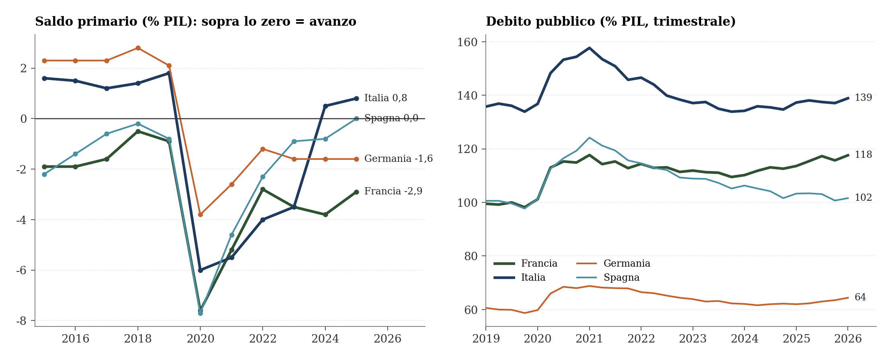
In parole semplici: dopo la pandemia l’Italia è tornata in avanzo primario nel 2024; la Francia è ancora sotto lo zero. Nello stesso periodo il debito francese ha superato i 115 punti di prodotto, mentre quello spagnolo è sceso verso 100.
I dati spiegano il sorpasso meglio dello stock di debito. L’Italia resta il Paese con il debito più alto (137 per cento del prodotto nel 2025, 139 nel primo trimestre 2026) e con la spesa per interessi più elevata (3,9 per cento), ma dal 2024 registra un avanzo primario: +0,8 per cento nel 2025. La Francia ha un debito più basso (116 per cento) e una spesa per interessi minore (2,2 per cento), ma un disavanzo primario di 2,9 punti nel 2025 e di 3,4 in media nel triennio 2023–2025; il suo debito è salito di oltre 17 punti dal 2019, contro 3 dell’Italia. La Spagna, con un debito di poco inferiore a quello francese ma un saldo primario in pareggio e un rapporto debito/prodotto in calo, ha lo spread più basso dei tre. È la gerarchia attesa se il mercato prezza la traiettoria del debito più del suo livello, come indica la letteratura sullo spazio fiscale [3], [4].
6.3 Le letture degli analisti
Le valutazioni seguenti sono opinioni degli uffici studi, da leggere come tali; le cifre di previsione sono loro stime, non dati.
Il ciclo elettorale. Le elezioni presidenziali francesi si terranno nella primavera del 2027, con un quadro politico frammentato; secondo l’ufficio studi di Intesa Sanpaolo, a politiche invariate il deficit potrebbe avvicinarsi al 7 per cento del prodotto e il debito al 130 per cento entro il 2030, e il governo punterebbe per il 2027 a un deficit solo di poco inferiore al 5 per cento [33].
Il costo del rifinanziamento. Per la stessa fonte, a rendimenti invariati il solo rinnovo dei titoli in scadenza porterebbe il tasso effettivo sul debito francese dal 2,0 al 3,0 per cento entro il 2030, con circa un punto di prodotto in più di spesa per interessi; la Francia sarebbe «il banco di prova della fiducia nel debito dell’area euro» [34].
Chi detiene il debito. Gli investitori esteri detengono il 54 per cento del debito francese, la quota più alta fra i G6, contro il 34 per cento di quello italiano, dove le famiglie sono salite dall’8 al 14,5 per cento; il capitale estero è la fonte di finanziamento più sensibile ai prezzi e alle notizie [34].
Il margine fra costo del debito e crescita. Il differenziale \(r-g\) francese resta negativo (−0,5) ma con un margine molto ridotto, e il debito diventa sempre più sensibile all’avanzo primario richiesto per stabilizzarlo [28].
In parole semplici: per gli analisti la Francia ha davanti un anno difficile: elezioni incerte, conti da sistemare, interessi in aumento, e un debito in mano per metà a investitori stranieri, che vendono più in fretta dei risparmiatori di casa.
Gli spunti di stampa della settimana sulla Francia — la manovra da 43 miliardi di misure nuove (circa 54 di sforzo complessivo), il giudizio del Haut Conseil des finances publiques su uno «sforzo significativo», il richiamo della presidente della BCE a una situazione «seria», il «monito» di un’agenzia di rating — restano opinioni o eventi da verificare sui documenti originali [2].
7 Che cosa non è cambiato
Il fondo macroeconomico italiano non mostra, nei dati disponibili, un deterioramento fra febbraio e ottobre: la crescita del prodotto sul trimestre precedente è stata simile nella prima metà dell’anno (Italia 0,3 e 0,2 per cento, Germania 0,4 e 0,3) e il deficit pubblico del 2025 (3,1 per cento del prodotto per l’Italia, 2,7 per la Germania, 5,1 per la Francia) è un dato consuntivo, identico nei due momenti per costruzione [31]. Gli indicatori pubblicati non segnalano quindi un deterioramento rilevante; non escludono però che il mercato abbia cambiato valutazione sui disavanzi futuri, sulla crescita attesa, sulla spesa per interessi o sul rischio politico, che questi dati non misurano. L’inflazione italiana è salita più di quella tedesca (dall’1,5 per cento di febbraio al 4,1 della stima rapida di settembre, contro dal 2,0 al 3,3), un differenziale che può riflettersi anche nei rendimenti nominali [17], [21]. La Spagna, con un rapporto fra debito e prodotto più basso, resta ai margini del movimento: l’allargamento non riguarda la periferia in quanto tale ma soprattutto i grandi emittenti ad alto debito.
8 Una stima: lo spread e i fondamentali
Le sezioni precedenti descrivono che cosa si è mosso. Questa misura quanto dello spread italiano sia spiegato dai fondamentali di finanza pubblica e dal clima dei mercati, e di quanto se ne discostino i 122 punti base di oggi e i 60 del minimo di febbraio.
8.1 Il modello
La stima usa un panel trimestrale di nove Paesi dell’area dell’euro (Italia, Spagna, Francia, Portogallo, Belgio, Austria, Paesi Bassi, Irlanda, Finlandia) dal 2003 al primo trimestre del 2026. La Grecia è esclusa per la ristrutturazione del debito del 2012. La variabile spiegata è lo spread a dieci anni verso la Germania, in punti base, calcolato sui rendimenti a lungo termine armonizzati di Eurostat [35]. Le variabili esplicative seguono la letteratura citata all’inizio [3], [4], [8]:
il debito pubblico in rapporto al prodotto, il saldo di bilancio in rapporto al prodotto (media degli ultimi quattro trimestri) e la crescita del prodotto sull’anno precedente, tutti in differenza rispetto alla Germania e ritardati di un trimestre, perché vengono pubblicati con ritardo [35];
l’indice VIX della volatilità attesa sulla borsa americana, come misura dell’avversione al rischio globale [36];
tre interazioni del debito: con il VIX, con il periodo di crisi dal 2010 al giugno 2012 (il trimestre precedente al discorso del presidente della BCE del 26 luglio 2012 e all’annuncio delle operazioni OMT, definite il 6 settembre 2012 [37]) e con il periodo di acquisti netti di titoli della BCE, dal 2015 al giugno 2022.
Ogni Paese ha un proprio livello di partenza (effetti fissi), che assorbe le differenze stabili di liquidità e di rating. Gli errori standard sono robusti all’eteroschedasticità, all’autocorrelazione e alla correlazione fra Paesi nello stesso trimestre [38].
| Variabile | (1) | (2) | (3) | (4) |
|---|---|---|---|---|
| Debito/PIL | 0,4 (0,6) | 0,4 (0,6) | 0,3 (0,5) | 0,7 (0,4) |
| Saldo di bilancio/PIL | -16,0*** (3,9) | -16,0*** (4,0) | -15,4*** (3,5) | -15,2*** (3,4) |
| Crescita del PIL | -7,0* (3,6) | -7,0** (3,6) | -6,1** (2,9) | -6,4** (2,9) |
| VIX (punti) | 1,0 (0,8) | 1,0 (0,7) | 1,0 (0,6) | 1,0* (0,6) |
| Debito × (VIX − 20)/10 | -0,0 (0,3) | -0,2 (0,2) | -0,2 (0,2) | |
| Debito × crisi 2010–12 | 4,8*** (1,8) | 4,5*** (1,7) | ||
| Debito × acquisti BCE 2015–22 | -0,6 (0,4) | |||
| Effetti fissi Paese | sì | sì | sì | sì |
| Osservazioni | 837 | 837 | 837 | 837 |
| R² | 0,51 | 0,51 | 0,59 | 0,60 |
In parole semplici: nella storia dell’area dell’euro lo spread si è mosso soprattutto insieme al bilancio dell’anno. Un punto di prodotto di disavanzo in più rispetto alla Germania si associa a circa 15 punti base di spread, un punto di crescita in meno a circa 6. Lo stock di debito, da solo, pesa poco nei tempi normali; durante la crisi del 2010–2012 ogni punto di debito in più si associava invece a quasi 5 punti base.
Il saldo di bilancio è la variabile più robusta: in tutte le specificazioni un punto di prodotto di disavanzo in più rispetto alla Germania si associa a 15–16 punti base di spread. La crescita conta con segno negativo, circa 6–7 punti base per punto. Il debito pesa poco nei tempi normali e molto nella crisi del 2010–2012, quando la sua sensibilità sale di 4,5 punti base per punto di prodotto: è il risveglio dei mercati sui fondamentali documentato per quegli anni [8]. Il VIX ha un effetto positivo, circa un punto base per punto di indice, al limite della significatività.
8.2 Lo spread italiano rispetto ai fondamentali
Il modello (4) fornisce, per ogni trimestre, il valore dello spread italiano previsto dai fondamentali inclusi nella stima. È un valore stimato su relazioni storiche, non un prezzo di equilibrio. Per le due date del 2026 la previsione usa i dati di finanza pubblica e di crescita già pubblicati a quella data e il VIX del giorno: per il 25 febbraio i conti pubblici del terzo trimestre 2025 e la crescita del quarto, perché i conti pubblici del quarto trimestre sono stati diffusi ad aprile; per il 2 ottobre i conti pubblici del primo trimestre 2026 e la crescita del secondo. I dati sono nella versione oggi disponibile, che può includere revisioni successive, e i coefficienti del modello sono stimati sull’intero campione fino al primo trimestre 2026: per il 25 febbraio si tratta quindi di una valutazione retrospettiva con le informazioni macroeconomiche disponibili allora, non di una previsione interamente effettuabile a quella data.
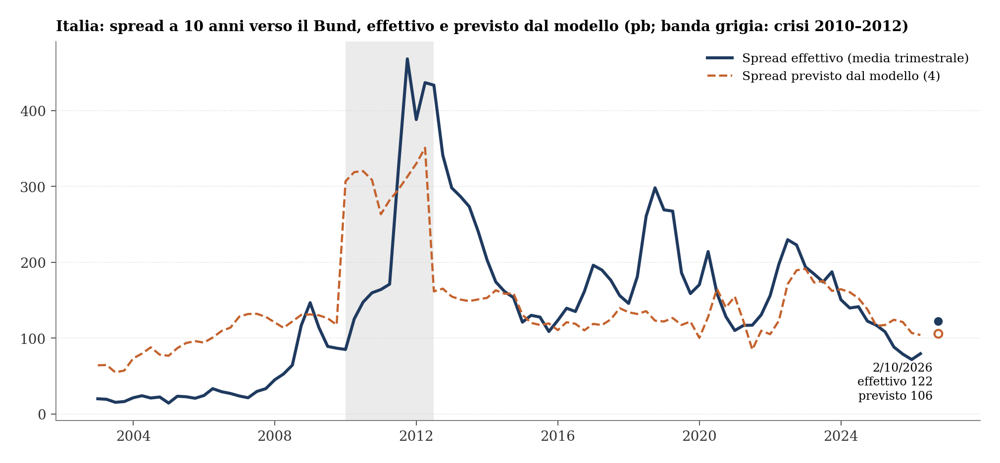
In parole semplici: la linea tratteggiata è lo spread che il modello associa ai conti pubblici e alla crescita dell’Italia rispetto alla Germania. Prima del 2008 lo spread effettivo è rimasto per anni sotto quel valore, nel 2011–2012 e nel 2018–2019 molto sopra. Gli scostamenti sono ampi e durano a lungo: dalla metà del 2025 lo spread è di nuovo sotto il valore del modello, oggi vicino.
| Momento | Debito | Saldo | Crescita | VIX | Previsto | IC 90% media | Int. previsione 90% | Effettivo |
|---|---|---|---|---|---|---|---|---|
| Minimo, 25/2/2026 | 74,5 | -1,2 | 0,6 | 17,9 | 120 | 85–155 | -16–255 | 60 |
| 2/10/2026 | 74,5 | 0,0 | 0,0 | 16,0 | 106 | 67–146 | -31–243 | 122 |
In parole semplici: con i dati pubblicati a ottobre il modello prevede per l’Italia uno spread intorno ai 105 punti base, con quelli disponibili a febbraio intorno ai 120. A febbraio lo spread effettivo era di 60, oggi è di 122. Il margine di errore del modello, che lavora su medie trimestrali, è però molto ampio, da poco sotto zero a circa 250 punti base: entrambi i valori vi rientrano. Il confronto con la chiusura di un singolo giorno è solo indicativo.
Il confronto va letto con cautela. A febbraio lo spread era di circa 60 punti base sotto il valore medio previsto, fuori dall’intervallo di confidenza della media ma dentro l’intervallo di previsione del modello trimestrale per una singola osservazione; il 2 ottobre è di circa 15 punti sopra, dentro entrambi. L’ampiezza dell’intervallo di previsione riflette scostamenti dal modello grandi e persistenti: per l’Italia lo scarto ha una deviazione standard di circa 80 punti base e un’autocorrelazione di 0,85 da un trimestre al successivo, e fra il 2004 e il 2008 lo spread è rimasto per quattro anni oltre 60 punti sotto il valore previsto. Uno scarto come quello di febbraio non è quindi eccezionale nella storia italiana, né dice quando e se si chiuderà.
Fra i due momenti gli indicatori inclusi nel modello non mostrano un deterioramento relativo dell’Italia: il disavanzo degli ultimi quattro trimestri è pari a quello tedesco (3,1 per cento del prodotto per entrambi, perché il disavanzo della Germania si è allargato), il divario di debito è stabile intorno ai 74 punti di prodotto e il divario di crescita si è ridotto da 0,6 a zero [35]. La lettura dell’allargamento come riavvicinamento al valore previsto dal modello è compatibile con la stima, ma la stima non identifica la causa dell’allargamento e non misura le attese del mercato su disavanzi, crescita e rischi futuri.
Il valore previsto dipende dalla specificazione. Con modelli diversi lo spread previsto per il 2 ottobre varia fra 85 e 147 punti base: è la dispersione delle stime puntuali fra modelli, da non confondere con un intervallo di confidenza. La forchetta delle stime è sopra il minimo di febbraio e comprende il livello di ottobre. Quando gli effetti fissi di trimestre assorbono tutti i fattori comuni, compresa la politica monetaria, anche lo stock di debito diventa significativo: circa un punto base di spread per punto di prodotto.
| Modello | Campione | Debito | Saldo | Previsto oggi |
|---|---|---|---|---|
| (1) Fondamentali | 2003–2026 | 0,37 | -16,0*** | 99 |
| (2) + debito × VIX | 2003–2026 | 0,37 | -16,0*** | 100 |
| (3) + debito × crisi | 2003–2026 | 0,34 | -15,4*** | 85 |
| (4) + debito × acquisti BCE | 2003–2026 | 0,67 | -15,2*** | 106 |
| (5) = (4) dopo la crisi | 2013–2026 | 0,16 | -13,2*** | 147 |
| (6) = (4) + effetti fissi trimestre | 2003–2026 | 0,99** | -12,5*** | n.d. |
In parole semplici: cambiando le ipotesi del modello, lo spread previsto per oggi va da 85 a 147 punti base. Il valore di oggi cade in quella forchetta, il minimo di febbraio sotto; ma ogni singola stima ha a sua volta un margine di errore ampio.
8.3 I fattori di mercato giorno per giorno
Il modello trimestrale spiega il livello dello spread, non i suoi movimenti di breve periodo. Per questi si stima una seconda regressione sulle variazioni giornaliere del 2026, con i fattori di mercato come variabili esplicative ed errori standard robusti all’autocorrelazione [39].
| Variazione giornaliera | (a) | (b) |
|---|---|---|
| Bund 10 anni (pb) | 0,08 (0,12) | 0,09 (0,06) |
| Treasury USA 10 anni (pb) | 0,12 (0,09) | 0,03 (0,05) |
| VIX (punti) | 0,61*** (0,15) | 0,48*** (0,13) |
| Brent (%) | 0,24*** (0,06) | 0,16*** (0,06) |
| Gas TTF (%) | 0,04 (0,05) | 0,04 (0,04) |
| Spread OAT–Bund (pb) | 0,58*** (0,16) | |
| Osservazioni | 197 | 197 |
| R² | 0,38 | 0,56 |
In parole semplici: nei giorni in cui sale la paura sulle borse o il petrolio rincara, lo spread italiano sale. Si muove anche insieme a quello francese: quando la Francia allarga di 10 punti base, l’Italia allarga in media di 6. Per le variazioni dei tassi tedeschi e americani non emerge invece un’associazione statisticamente significativa in questa specificazione.
Nel 2026 lo spread italiano reagisce all’avversione al rischio (mezzo punto base per punto di VIX) e al petrolio (0,2 punti base per ogni punto percentuale di rialzo del Brent); per le variazioni del Bund e del Treasury non emerge un’associazione statisticamente significativa, il che non equivale a dimostrare l’assenza di un effetto. Il gas, dato il petrolio, non aggiunge informazione su base giornaliera. Lo spread francese verso il Bund spiega una parte ampia delle variazioni residue: il coefficiente è di 0,6 e l’adattamento della regressione sale dal 38 al 56 per cento. È un co-movimento, non una prova di contagio: lo stesso risultato si avrebbe se un fattore comune, come la percezione del rischio sui bilanci pubblici dei grandi Paesi ad alto debito, muovesse entrambi gli spread.
8.4 Le fonti dei rendimenti
I rendimenti giornalieri per Paese provengono da un aggregatore di dati di mercato, perché Eurostat e la BCE non diffondono una serie giornaliera dei rendimenti a dieci anni per singolo Paese (la serie giornaliera di Eurostat è stata dismessa) e non esiste una fonte ufficiale giornaliera comune ai quattro Paesi considerati. Il panel usa invece la serie ufficiale mensile di Eurostat. Sulle medie mensili da gennaio 2025 ad agosto 2026 le due fonti coincidono a meno di pochi punti base; per il Bund il confronto giornaliero con la curva stimata dalla Bundesbank dà uno scarto medio di circa 7 punti base, stabile nel tempo [1], [20], [35].
| Grandezza | Differenza media (pb) | Differenza assoluta media (pb) | Massima (pb) |
|---|---|---|---|
| Rendimento BTP | -0,8 | 1,4 | 3,9 |
| Rendimento Bund | 2,3 | 2,3 | 3,9 |
| Rendimento OAT | -0,3 | 1,9 | 5,1 |
| Rendimento Bonos | 2,1 | 2,4 | 7,0 |
| Spread BTP–Bund | -3,1 | 3,1 | 6,4 |
| Spread OAT–Bund | -2,6 | 3,0 | 7,9 |
| Spread Bonos–Bund | -0,2 | 1,5 | 5,5 |
In parole semplici: i dati giornalieri usati nella nota e quelli ufficiali mensili dicono la stessa cosa: la differenza è di uno o due punti base sui rendimenti e di circa tre sullo spread, troppo poco per cambiare le conclusioni.
9 Che cosa scrivono agenzie e analisti
9.1 Spunti dalla stampa e loro verifica
Le affermazioni di quotidiani e agenzie non sono trattate come risultati. Sono opinioni di giornalisti, operatori e responsabili politici, oppure eventi e dati riportati di seconda mano; servono come spunti da verificare sulle variabili. La tavola seguente raccoglie quelle della settimana e indica, per ciascuna, la verifica possibile con i dati di questa nota [2], [22].
| Affermazione (fonte, data) | Tipo | Verifica sui dati | Esito |
|---|---|---|---|
| «Spread sale in scia Treasury Usa» (agenzia, 30/9) | Interpretazione | Correlazione fra variazioni giornaliere dello spread BTP–Bund e del rendimento Treasury: 0,39 (gen–ago), 0,18 (set–2/10) | Non confermata: il legame si indebolisce proprio a settembre |
| «Crisi petrolio fa impennare attese su tassi» (agenzia, 1/10) | Interpretazione | Bund a 2 anni (Bundesbank): 3,32 % il 28/9, 3,21 % il 1/10 | Non confermata dal Bund a 2 anni, che scende; il Bund a 2 anni non misura da solo il percorso atteso dei tassi BCE: resta da verificare sui contratti a termine |
| «Contagio da Francia» (agenzia, 1/10) | Interpretazione | Correlazione variazioni giornaliere BTP–Bund e OAT–Bund: 0,56 → 0,84; BTP–Bund e Bonos–Bund: 0,69 → 0,80 | Non dimostrato: il co-movimento cresce anche con la Spagna, quindi è in parte comune |
| «Fortuna siamo stati attenti al debito» (ministro dell’Economia, 29/9) | Opinione | Δ spread dal minimo: Italia +62, Francia +91, Spagna +23 pb | Compatibile solo in parte: meglio della Francia, peggio della Spagna |
| Treasury a 10 anni «ai massimi dal 2002» (agenzia, 1/10) | Dato riportato | FRED DGS10: 5,29 % il 30/9; ultimo valore pari o superiore: 5/2002 | Confermato sulla fonte primaria |
| Inflazione area euro, stima rapida di settembre 3,8 % (agenzia, 2/10); Italia 4,1 % (ufficio studi, 30/9) | Dato riportato | Eurostat teicp000, stima flash di settembre: area euro 3,8 %, Italia 4,1 % | Confermato sulla fonte primaria (stima flash, provvisoria) |
| Asta BTP 5 e 10 anni con rendimenti ai massimi dal 2023 (agenzia, 29/9) | Evento riportato | Risultati d’asta MEF: BTP 10 anni 4,58 % (copertura 1,56), BTP 5 anni 4,08 % (copertura 1,54); BTP 10 anni sul secondario 4,61 %, livello non toccato da 11/2023 | Confermato sulla fonte primaria (MEF); domanda non debole |
| Manovra francese da 43 miliardi, deficit 2027 al 5 % (agenzia, 1/10) | Evento riportato | PLF e PLFSS 2027 presentati a Bercy il 1/10 (invito stampa ufficiale); 43 miliardi di misure nuove (circa 54 di sforzo complessivo con il trascinamento del 2026) e obiettivo 5 % riportati in modo concorde da più fonti; resoconto ufficiale del Consiglio dei ministri non accessibile | Confermato nella sostanza; cifre da leggere sul testo ufficiale |
| Scostamento di bilancio italiano di circa 7 miliardi (agenzia, 2/10) | Evento riportato | Solo dichiarazione di un ministro prima del Consiglio dei ministri; delibera non ancora pubblicata | Da verificare (comunicato del Consiglio dei ministri, relazione al Parlamento) |
In parole semplici: i fatti riportati dalla stampa reggono quasi tutti: il Treasury ai massimi dal 2002, l’asta dei BTP ai rendimenti più alti dal 2023, la manovra francese. Due spiegazioni molto citate, «colpa del Treasury» e «colpa delle attese sui tassi», non trovano conferma negli indicatori usati qui, che però non bastano a escluderle; il «contagio dalla Francia» è possibile ma i dati non lo distinguono da un movimento comune. Le stime rapide dell’inflazione di settembre sono confermate da Eurostat; resta da verificare lo scostamento di bilancio italiano.
Le opinioni dei responsabili politici restano tali. Il 29 settembre il ministro dell’Economia commenta lo spread a 100 punti sostenendo che l’attenzione al debito ha protetto il Paese; il 30 settembre la presidente della BCE afferma che la banca centrale «non può riaprire Hormuz» e definisce «seria» la situazione del debito francese [2].
9.2 La lettura di un ufficio studi bancario
Il 1° ottobre l’ufficio studi di Intesa Sanpaolo dedica agli spread dell’area dell’euro una nota di strategia sui tassi dal titolo «Spread euro: mercato lasciato solo» [28]. È un’opinione di analisti, da leggere come tale; poggia però su grandezze ricostruibili (previsioni del Fondo monetario, bilancio della BCE) e propone tre spunti.
Il differenziale fra costo del debito e crescita. Sulla base delle previsioni del Fondo monetario internazionale, la differenza fra costo medio del debito e crescita nominale (\(r-g\), media dei cinque anni successivi) resta negativa per quasi tutti i Paesi dell’area, ma non per l’Italia, dove passa a +0,2 per cento nel 2027. Per la Germania è −1,2, per la Spagna −1,7, per la Francia −0,5. Secondo la nota, l’Italia sarà il primo grande emittente a uscire dal regime favorevole degli anni post-pandemia, e la disciplina di bilancio tornerà a essere il fattore dominante della performance relativa di BTP, OAT, Bonos e Bund. La lettura è coerente con il ruolo dello spazio fiscale nella formazione dei premi al rischio documentato in letteratura [4].
Nessuna frammentazione sistemica, per ora. Un indicatore di frammentazione costruito sulla quota di varianza dei rendimenti decennali spiegata dalla seconda componente principale mostra solo un moderato aumento: i rendimenti riflettono ancora soprattutto fattori comuni e il riprezzamento del rischio di tasso. Non emergono, secondo la nota, condizioni tali da rendere probabile un intervento della Banca centrale europea con gli strumenti anti-frammentazione.
Meno sostegno, più offerta, meno Europa. La riduzione del bilancio della BCE lascia al mercato titoli in scadenza per circa 50 miliardi entro fine 2026 e 310 miliardi nel 2027; nello stesso tempo il negoziato sul bilancio europeo 2028–2034 e la resistenza dei Paesi «frugali» al debito comune spostano sui bilanci nazionali una quota maggiore delle spese future. Ne deriva che il rischio politico per gli spread diventa europeo oltre che nazionale.
In parole semplici: per gli analisti della banca l’Italia ha un problema di aritmetica del debito: il costo degli interessi sta per superare la crescita dell’economia, e quindi per non far salire il debito servono avanzi di bilancio più ampi. Il mercato non è in crisi, ma è «solo»: la BCE rincorre l’inflazione e compra sempre meno titoli, l’Europa è divisa sul debito comune.
10 Sintesi
Dal minimo del 25 febbraio al 2 ottobre 2026 lo spread BTP–Bund è passato da 60 a 122 punti base. Per sette mesi l’allargamento è stato lento e guidato da un rialzo comune dei rendimenti, con un sovrappiù italiano di circa 27 punti base. Nell’ultima settimana l’allargamento accelera e spiega oltre la metà del totale. Sui titoli di riferimento il BTP sale e il Bund scende, una combinazione compatibile con la fuga verso la qualità; sulle curve a scadenza costante della BCE e della Bundesbank il rendimento tedesco resta però quasi fermo, e l’accelerazione viene soprattutto dal rialzo del BTP.
Lo shock energetico è la causa remota e non quella prossima. A marzo aveva prodotto un episodio di paura rientrato in poche settimane. Sei mesi dopo ha agito attraverso l’inflazione accumulata, due rialzi della Banca centrale europea e tassi globali più alti, e infine, secondo l’ipotesi più coerente con i dati, attraverso i bilanci pubblici, con la manovra francese e le scelte di finanza pubblica italiane concentrate negli stessi giorni; gli eventi di bilancio, riportati dalle agenzie, restano da verificare sui documenti ufficiali. Se l’ipotesi regge, il differenziale si è allargato quando il costo dell’energia è diventato una questione di debito pubblico, cioè della variabile su cui Italia e Germania differiscono di più.
Il confronto internazionale colloca l’Italia in un movimento più ampio. Nell’ultima settimana tutti gli spread verso il titolo tedesco di riferimento si allargano; Italia e Francia si allargano però il doppio della Spagna, e la Francia, che a febbraio pagava meno dell’Italia, oggi paga di più. Treasury e Gilt, letti al netto del costo attuale di copertura dal cambio, sono diventati per l’investitore in euro un’alternativa al Bund più attraente che a inizio anno, senza che questo equivalga a un rendimento garantito.
La stima econometrica colloca il livello di ottobre vicino al valore previsto da modelli storici dello spread sui fondamentali: circa 105 punti base nel modello principale, fra 85 e 147 a seconda della specificazione. Il minimo di febbraio era sotto tutte le stime puntuali, ma dentro l’intervallo di previsione del modello trimestrale, che è ampio. Gli indicatori di finanza pubblica e di crescita inclusi nel modello non mostrano un deterioramento relativo dell’Italia fra i due momenti. Il quadro è compatibile con un riavvicinamento dello spread ai valori previsti dal modello; l’analisi non dimostra però che il livello di febbraio fosse un prezzo sbagliato, né che l’aumento sia principalmente una correzione verso un valore fondamentale.
Riferimenti
Nota metodologica
Questo documento nasce dall’interazione di tre componenti. L’autore definisce le domande, esercita il giudizio critico e assume la responsabilità scientifica ed editoriale del risultato. Strumenti di intelligenza artificiale generativa sono impiegati a supporto della ricerca bibliografica, della lettura, della sintesi, della riorganizzazione argomentativa e della revisione del testo. Un’infrastruttura open source sviluppata dall’autore automatizza il reperimento, l’armonizzazione e il controllo dei dati dalle fonti statistiche ufficiali, e mantiene l’elaborazione documentata e riproducibile.
Le fonti sono pubblicamente accessibili e citate con la loro denominazione ufficiale; l’analisi è pertanto integralmente auditabile e replicabile da terzi a partire da esse. Le tabelle e i grafici sono elaborazioni dell’autore: calcoli, aggregazioni, trasformazioni e scelte di rappresentazione sono attribuibili all’autore e non agli enti produttori dei dati.
La responsabilità per le fonti utilizzate, le analisi condotte, le elaborazioni effettuate, le interpretazioni proposte e le conclusioni formulate resta interamente in capo all’autore. L’intelligenza artificiale è stata impiegata come ambiente di supporto cognitivo ed editoriale, non come fonte primaria, autore autonomo o sostituto del giudizio critico.